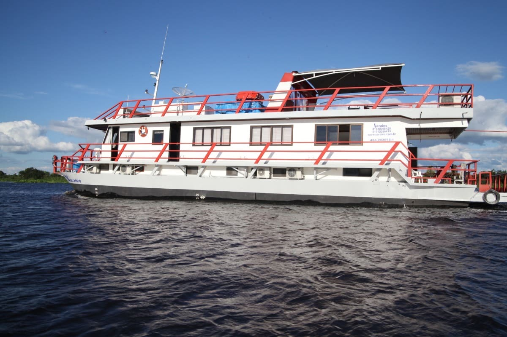

01 / Clássico
Xaraiés I
A embarcação que deu início à nossa história: ampla, acolhedora e preparada para grupos que querem dividir o rio.
Estrutura a bordo
- Suítes com banheiro privativo
- Ar-condicionado e roupa de cama
- Sala com dois ambientes
- TV, som e internet
- Cofre e antena parabólica
- Deck com churrasqueira
- Barcos de apoio para pesca e passeios